Reportes financieros dinámicos
Guia de uso
Varios Tipos de Informes / Filtros Disponibles
Puedes encontrar las opciones para los informes en el menú "Informes"
presente en la parte superior central de la barra de navegación
- Informe de Pérdidas y Ganancias
- Informe de Balance General
- Informe Resumido Ejecutivo
- Informe de Flujo de Efectivo
- Informe de Libro Mayor General
- Informe Consolidado de Diario
- Informe de Cuentas por Cobrar
- Informe de Cuentas por Pagar
- Informe de Balance de Comprobación
- Informe de Impuestos
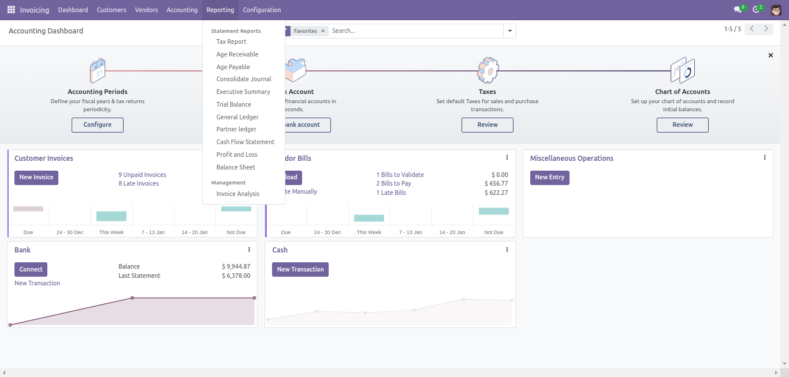
Filtros Disponibles
- Filtro de Fecha: Es posible filtrar el informe basándose en varias opciones de filtro de fecha - Hoy, Fin del Mes Pasado, Fin del Último Trimestre, Fin del Último Año Fiscal, y Rango de Fechas Personalizado.
- Filtro de Comparación: El informe también puede compararse con el período anterior o un período personalizado (definido por el usuario)
- Filtro de Diario: El botón de Todos los Diarios ofrece la opción de filtrar el informe en base a Banco, Efectivo, Impuestos en Base de Efectivo, Facturas de Clientes, Diferencias de Cambio, Operaciones Misceláneas, Facturas de Proveedores.
- Filtro Analítico: La contabilidad analítica te ayuda a analizar costos e ingresos, sin importar el caso de uso. Puedes vender o comprar servicios, rastrear tiempo o analizar el desempeño de producción a través de filtros analíticos.
- Filtro de Socio: Se puede ingresar el nombre del socio en el botón Búsqueda de Socios y se mostrará el informe correspondiente.
- Filtro de Tipo de Cuenta: El botón Cuenta permite al usuario seleccionar entre Por Pagar y Por Cobrar
- Filtro de Opciones: El botón Opciones proporciona opciones para ver Asientos Contables Registrados, Asientos No Registrados (Borrador), Mostrar Asientos Conciliados, Mostrar Asientos No Conciliados, Cambiar el Rango de Fechas y Imprimir Informe con Detalles.
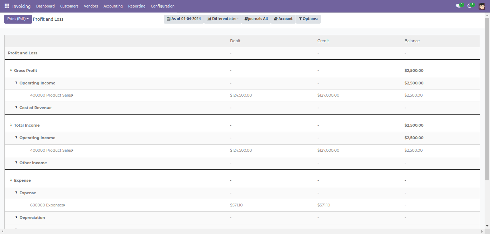
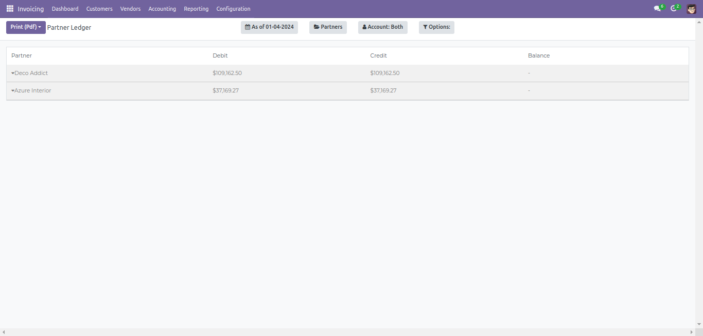
Informe de Pérdidas y Ganancias
El Informe de Pérdidas y Ganancias muestra el Beneficio Bruto, los
Ingresos Totales y los Informes de Beneficio Neto de la empresa.
- Es posible filtrar el informe desde el botón "A partir de la fecha" con varias opciones de filtro de fecha: Hoy, Fin del Mes Pasado, Fin del Último Trimestre, Fin del Último Año Fiscal y Rango de Fechas Personalizado.
- El informe también puede compararse con el período anterior o un período personalizado (definido por el usuario).
- El botón "Todos los Diarios" ofrece la opción de filtrar el informe en base a Banco, Efectivo, Impuestos en Base de Efectivo, Facturas de Clientes, Diferencias de Cambio, Operaciones Misceláneas, Facturas de Proveedores.
- El botón "Opciones" proporciona opciones para ver Asientos Registrados, Asientos No Registrados (Borrador) y Cambiar el Rango de Fechas.
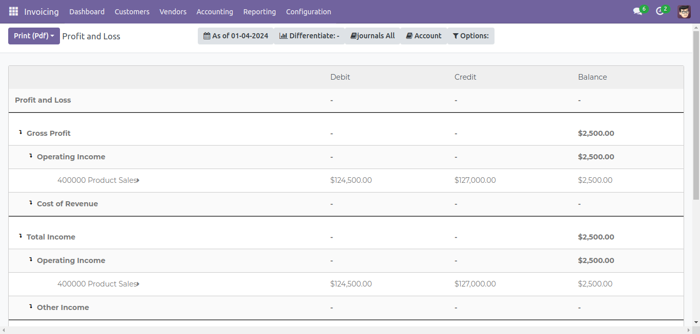
Informe de Balance General
El informe de Balance General muestra los activos, pasivos y capital de
la empresa.
El Informe de Pérdidas y Ganancias muestra el Beneficio Bruto, los
Ingresos Totales y los Informes de Beneficio Neto de la empresa.
- Es posible filtrar el informe desde el botón "A partir de la fecha" con varias opciones de filtro de fecha: Hoy, Fin del Mes Pasado, Fin del Último Trimestre, Fin del Último Año Fiscal y Rango de Fechas Personalizado.
- El informe también puede compararse con el período anterior o un período personalizado (definido por el usuario).
- El botón "Todos los Diarios" ofrece la opción de filtrar el informe en base a Banco, Efectivo, Impuestos en Base de Efectivo, Facturas de Clientes, Diferencias de Cambio, Operaciones Misceláneas, Facturas de Proveedores.
- El botón "Opciones" proporciona opciones para ver Asientos Registrados, Asientos No Registrados (Borrador) y Cambiar el Rango de Fechas.
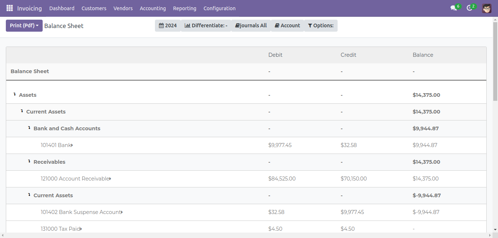
Informe Resumido Ejecutivo
El Informe Resumido Ejecutivo muestra un resumen de los puntos
principales de un informe más extenso.
Proporciona una visión general de la rentabilidad, posición y desempeño
del negocio.
- Es posible filtrar el informe desde el botón "A partir de la fecha" con varias opciones de filtro de fecha: Hoy, Fin del Mes Pasado, Fin del Último Trimestre, Fin del Último Año Fiscal y Rango de Fechas Personalizado.
- El informe también puede compararse con el período anterior o un período personalizado (definido por el usuario).
- El botón "Opciones" proporciona opciones para ver Asientos Registrados, Asientos No Registrados (Borrador) y Cambiar el Rango de Fechas.
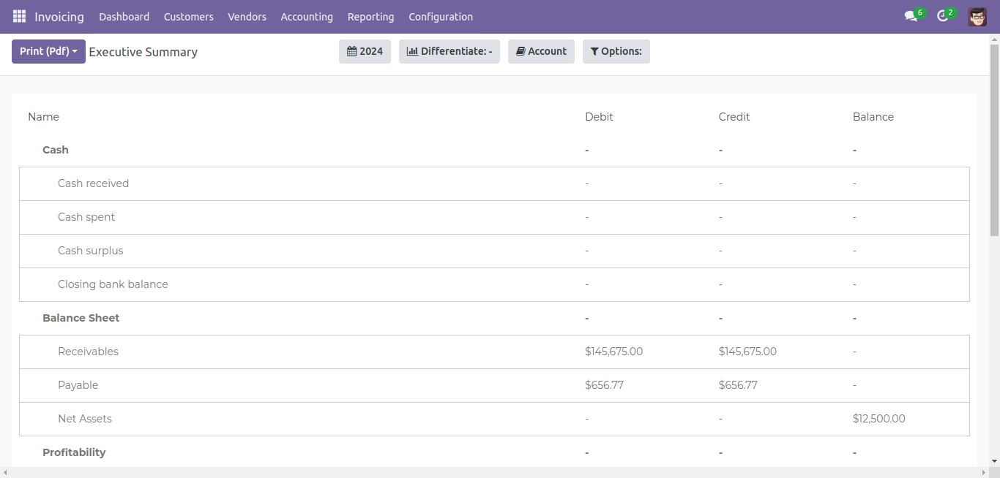
Informe del Libro Mayor
El informe del Libro Mayor te muestra toda la actividad financiera de tu
negocio. Estas cuentas son categorías que muestran hacia dónde va o de
dónde proviene tu dinero.
- Es posible filtrar el informe desde el botón "A partir de la fecha" con varias opciones de filtro de fecha: Hoy, Fin del Mes Pasado, Fin del Último Trimestre, Fin del Último Año Fiscal y Rango de Fechas Personalizado.
- El botón "Todos los Diarios" ofrece la opción de filtrar el informe en base a Banco, Efectivo, Impuestos en Base de Efectivo, Facturas de Clientes, Diferencias de Cambio, Operaciones Misceláneas, Facturas de Proveedores.
- El botón "Opciones" proporciona opciones para ver Asientos Registrados, Asientos No Registrados (Borrador), Cambiar el Rango de Fechas y Imprimir el Informe con Detalles.
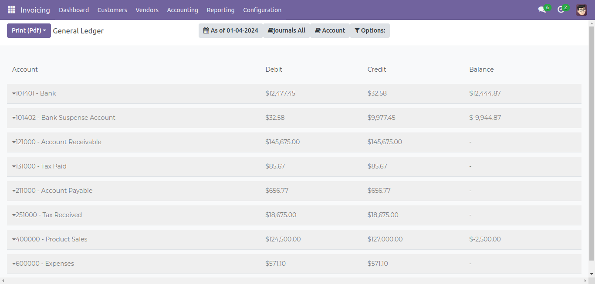
Informe del Libro Mayor de Socios
El informe del Libro Mayor de Socios muestra la actividad financiera de
un negocio con sus socios.
- Es posible filtrar el informe desde el botón "A partir de la fecha" con varias opciones de filtro de fecha: Hoy, Fin del Mes Pasado, Fin del Último Trimestre, Fin del Último Año Fiscal y Rango de Fechas Personalizado.
- Se puede ingresar el nombre del socio en el botón "Búsqueda de Socios" y el informe correspondiente será mostrado.
- El botón "Cuentas" permite al usuario seleccionar entre Cuentas por Pagar y Cuentas por Cobrar.
- El botón "Opciones" proporciona opciones para ver Asientos Registrados, Asientos No Registrados (Borrador), Mostrar Asientos Conciliados, Mostrar Asientos No Conciliados, Cambiar el Rango de Fechas y Imprimir el Informe con Detalles.
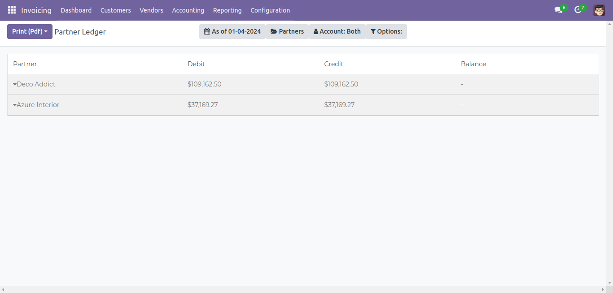
Informe de Cuentas por Cobrar
El informe de Cuentas por Cobrar categoriza y muestra la cantidad que
una empresa debe cobrar en función del tiempo que una factura ha estado
pendiente.
- Es posible filtrar el informe desde el botón "A partir de la fecha" con varias opciones de filtro de fecha: Hoy, Fin del Mes Pasado, Fin del Último Trimestre, Fin del Último Año Fiscal y Rango de Fechas Personalizado.
- Se puede ingresar el nombre del socio en el botón "Búsqueda de Socios" y el informe correspondiente será mostrado.
- El botón "Opciones" proporciona opciones para ver Asientos Registrados, Asientos No Registrados (Borrador), Cambiar el Rango de Fechas y Imprimir el Informe con Detalles.
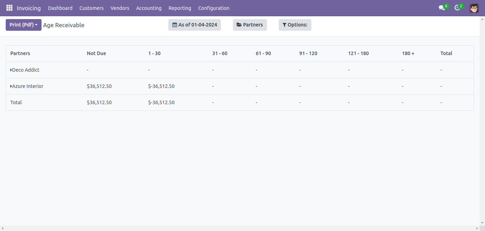
Informe de Cuentas por Pagar
El informe de Cuentas por Pagar muestra el total de la deuda que una
empresa tiene con sus proveedores, en función del número de días
transcurridos desde la fecha de la factura.
- Es posible filtrar el informe desde el botón "A partir de la fecha" con varias opciones de filtro de fecha: Hoy, Fin del Mes Pasado, Fin del Último Trimestre, Fin del Último Año Fiscal y Rango de Fechas Personalizado.
- Se puede ingresar el nombre del socio en el botón "Búsqueda de Socios" y el informe correspondiente será mostrado.
- El botón "Opciones" proporciona opciones para ver Asientos Registrados, Asientos No Registrados (Borrador), Cambiar el Rango de Fechas y Imprimir el Informe con Detalles.
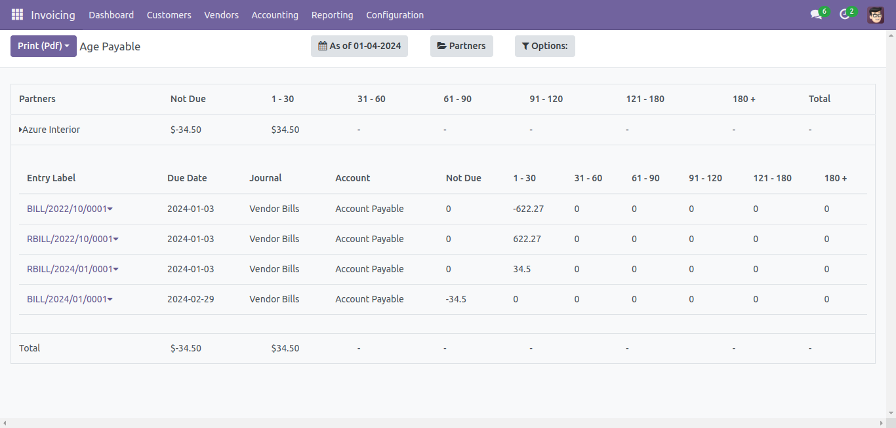
Informe de Balance de Comprobación
El informe de Balance de Comprobación muestra los saldos finales de las
cuentas del libro mayor. Los saldos de todos los libros se compilan en
columnas de débito y crédito que son iguales.
- Es posible filtrar el informe desde el botón "A partir de la fecha" con varias opciones de filtro de fecha: Hoy, Fin del Mes Pasado, Fin del Último Trimestre, Fin del Último Año Fiscal y Rango de Fechas Personalizado.
- El botón "Todos los Diarios" ofrece la opción de filtrar el informe en base a Banco, Efectivo, Impuestos en Base de Efectivo, Facturas de Clientes, Diferencias de Cambio, Operaciones Misceláneas, Facturas de Proveedores.
- El botón "Opciones" proporciona opciones para ver Asientos Registrados, Asientos No Registrados (Borrador), Cambiar el Rango de Fechas y Imprimir el Informe con Detalles.
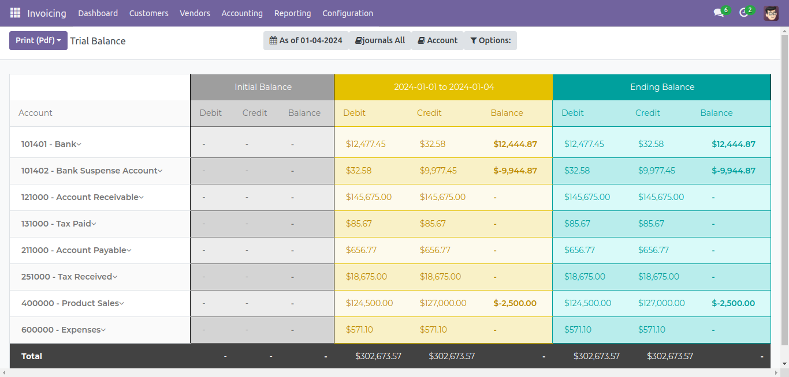
Informe Consolidado
El informe de Diario Consolidado muestra los montos de crédito y débito
de todas las líneas del diario subsidiario de una empresa que fueron
consolidadas en cuentas.
- Es posible filtrar el informe desde el botón "A partir de la fecha" con varias opciones de filtro de fecha: Hoy, Fin del Mes Pasado, Fin del Último Trimestre, Fin del Último Año Fiscal y Rango de Fechas Personalizado.
- El botón "Todos los Diarios" ofrece la opción de filtrar el informe en base a Banco, Efectivo, Impuestos en Base de Efectivo, Facturas de Clientes, Diferencias de Cambio, Operaciones Misceláneas, Facturas de Proveedores.
- El botón "Opciones" proporciona opciones para ver Asientos Registrados, Asientos No Registrados (Borrador), Cambiar el Rango de Fechas y Imprimir el Informe con Detalles.
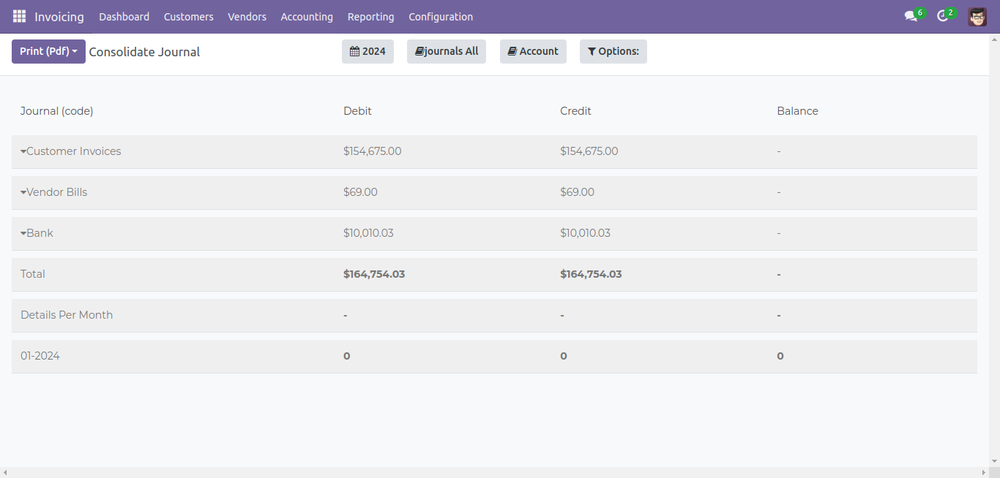
Informe de Impuestos
El informe de Impuestos muestra los impuestos incurridos en varias
ventas y compras del negocio, categorizándolos en función de varios
tramos/brackets fiscales. El informe ofrece una excelente visión general
rápida.
- Es posible filtrar el informe en base a varias opciones de filtro de fecha: Hoy, Fin del Mes Pasado, Fin del Último Trimestre, Fin del Último Año Fiscal y Rango de Fechas Personalizado.
- El informe también se puede comparar con el período anterior o un período personalizado (definido por el usuario).
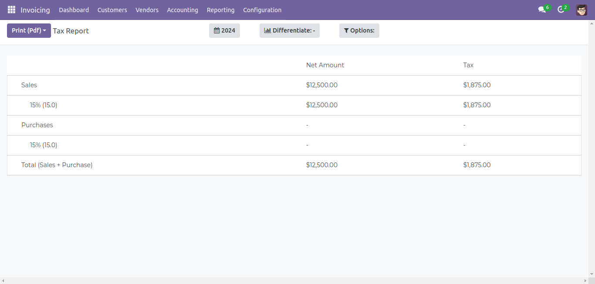
Funcionalidades
Los informes calculados pueden ser exportados, impresos y enviados por
correo electrónico según la preferencia del usuario. En la esquina
superior izquierda, hay botones para Imprimir (PDF), Exportar (XLSX) y
Enviar Correo Electrónico.
- Imprimir (PDF): Para imprimir el informe actual en formato PDF.
- Exportar (XLSX): Para imprimir el informe actual en formato Excel.
- Enviar Correo Electrónico: Para enviar por correo electrónico el informe actual adjunto como PDF al usuario.
Crear Informes Financieros Dinámicamente
Con la ayuda de esta funcionalidad, puedes crear informes por ti mismo.
Para hacerlo, sigue estos pasos:
- Ve al menú de configuración presente en la barra de navegación. Haz clic en "Informes Financieros Dinámicos". Al hacer clic, se abrirá un formulario.
- Rellena los campos requeridos:
- Nombre del Informe: Proporciona un nombre para el informe.
- Menú del Informe: Elige el menú del informe donde deseas que aparezca. Por ejemplo, si eliges Contabilidad->Informes->Estados Genéricos, el nombre del informe se mostrará en la sección de Informes de la barra de navegación.
- Padre: Si deseas mantener el informe en el menú de informes existentes, puedes elegir el tipo correspondiente. Hay 5 tipos para crear informes:
- Total: Si eliges Total como tipo, el informe se mostrará o se creará como la suma de los registros.
- Resta: Si eliges Resta como tipo, se creará un informe que mostrará la diferencia de los registros.
- Cuentas: Si eliges Cuentas como tipo, el informe se creará según las cuentas seleccionadas.
- Tipo de Cuenta: Si eliges Tipo de Cuenta como tipo, el informe se creará según el tipo de cuentas seleccionado.
- Valor del Informe: Si eliges Valor del Informe como tipo, el informe se basará en valores como ingresos operativos, activos, etc.